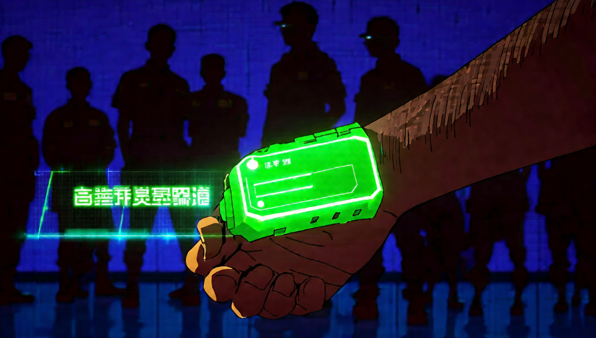
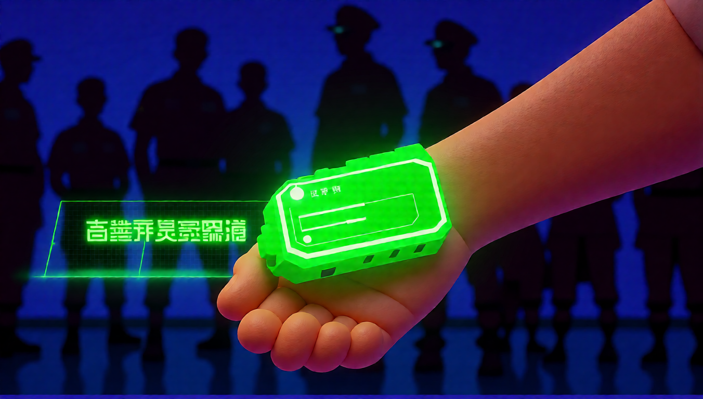
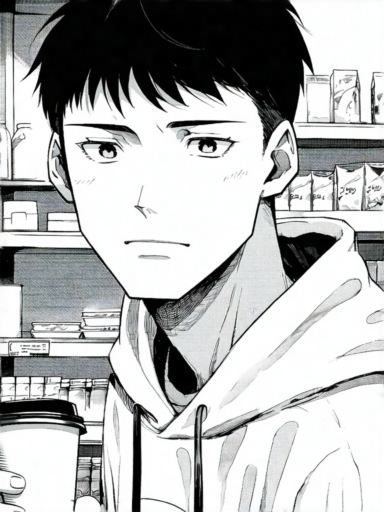
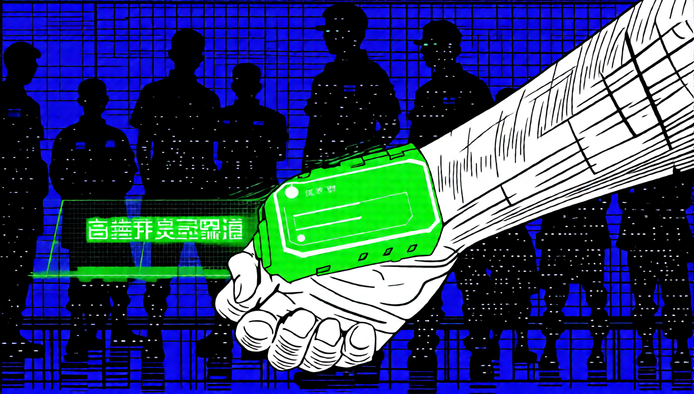
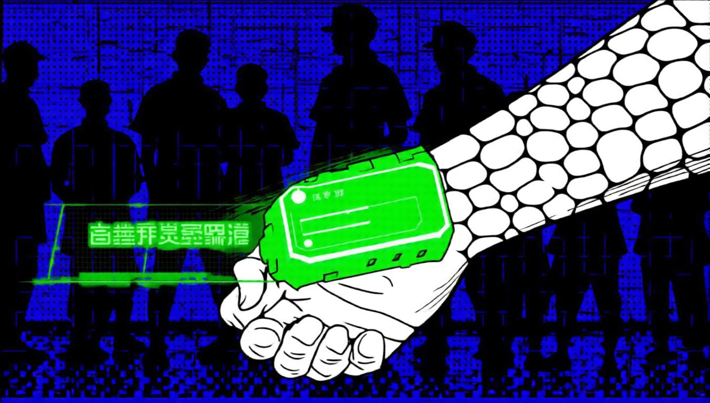
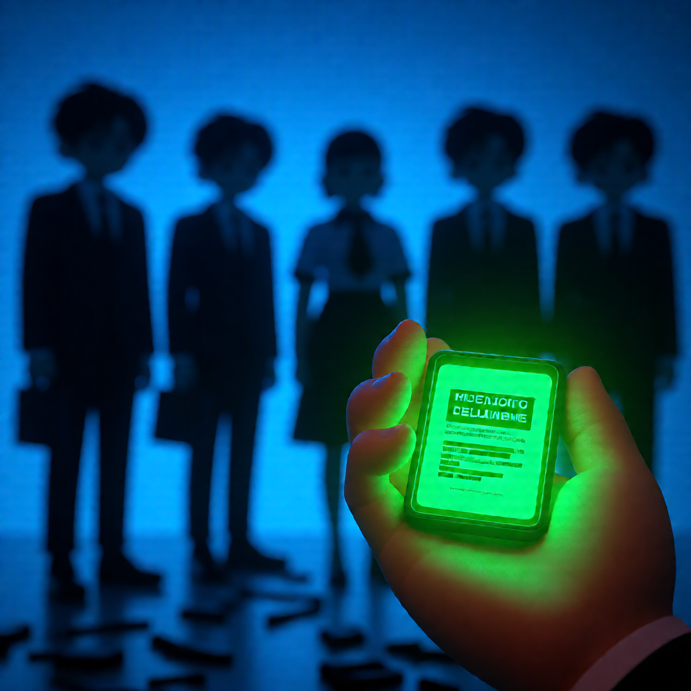

2026-08-05 · 需求變更為「content 圖 → style 圖的畫風」 · 前一份見 report_01.html
content 固定、prompt 固定，只換風格圖（單掛 sref）：
| 風格圖 | 風格圖本身 L / 暖 / S | 輸出 L / 暖 / S |
|---|---|---|
| style_ref_4（3D 公仔） | 65 / +38 / 0.52 | 34 / −25 / 0.85 |
| style_ref_6（綠調底片） | 69 / −11 / 0.69 | 34 / −23 / 0.80 |
| style_ref_2（漫畫網點） | 180 / −1 / 0.07（近乎白圖） | 34 / −24 / 0.85 |
丟一張近乎全白的圖進去，輸出還是 L34 的深色高飽和——image2 零影響。
拿掉 sref（純底模）結果一樣。中英文 prompt 措辭都試過。
節點的 optional 插槽查證確實是 image1/image2/image3，接線沒錯。

其他全不動，只換 LoRA。接線正確，缺的是那顆 LoRA。
一開始的假設是「sref 壓制了 image2」，但拿掉 sref 也一樣失效 → 不是壓制，是底模本來就沒這個能力。差一步就下錯結論。
模型鏈：UNET → sref → qwenstyle → Lightning

漫畫網點風格（style_ref_2）是決定性案例：



sref 確實有貢獻——它把風格咬得更緊，qwenstyle 單掛會產生幻覺紋理。
| 風格圖 | 疊加（構圖保留） | 只用 qwenstyle | 判定 |
|---|---|---|---|
| ref_4 3D 公仔 | 0.547 | 0.386 | 疊加勝 |
| ref_2 漫畫網點 | 0.171 | 0.220 | 疊加勝（單掛失敗） |
| ref_6 底片顆粒 | 0.404 | 0.255 | 兩者都幾乎沒轉過去 |
已知弱項：照片／實拍類風格轉不太動。三個案例 2 成 1 敗，這是結論的邊界，不要外推。

VLM 把 content 圖描述成純文字（指令明令禁止提畫風，避免跟風格圖打架）再重畫。 content 經過文字必然掉資訊。要保構圖，content 就得走 image 通道。
report_01 說「這個 skill 只吃一張圖、跟 qwenstyle 是不同的東西」。 那個描述在單圖模式下仍然成立，但作為 skill 的定位已經改了—— 現在主要用法是 content + style 雙圖，單圖題材模式退為次要。SKILL.md 已同步更新。